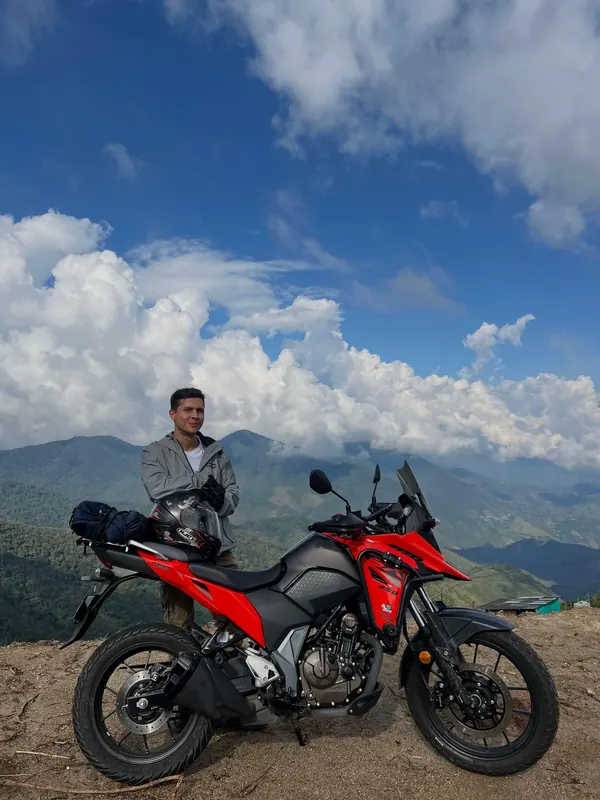

Camilo
Médico veterinario
Soy Camilo, tengo 33 años y creo firmemente que la carretera siempre enseña algo. Me gusta viajar sin prisas, probar las cosas en condiciones reales y mostrar la experiencia tal como es. Encuentro en la moto una forma honesta de conocer lugares, personas y de vivir cada viaje con los pies en la tierra y el corazón abierto.